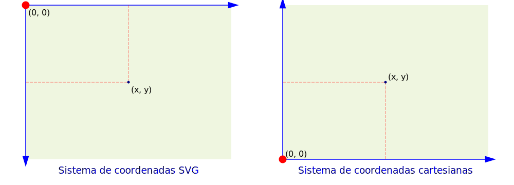
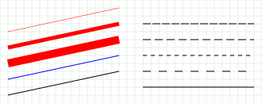
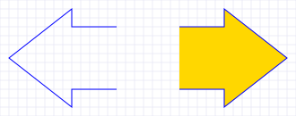
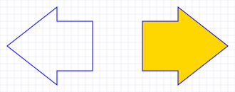
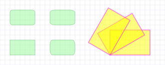
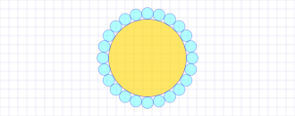
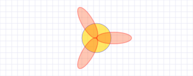
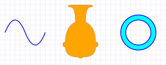
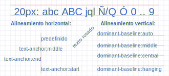

SVG
Sistema de coordenadas
En esta aplicación se la entrada de datos para dibujar
figuras geométricas se emplea el sistema de coordenadas cartesianas.
Para la definición de marcadores úsese el sistema de coordenadas SVG.

Figuras geométricas
Línea
linea(p1, p2, **js)
# p1 = (x1, y1)
# p2 = (x2, y2)
# **js: argumentos clave:valor
Ejemplo:
from html5svg2 import SVG2, linea
svg = SVG2('ajustable', W=330, H=130, letra="Consolas", color_fondo="rgb(240,250,240)")
svg.cuadricula(10, style="stroke:green;stroke-width:0.1px;")
l_db = [
linea((10, 90), (150, 120), style="stroke:red;stroke-width:0.5px;"),
linea((10, 70), (150, 100), style="stroke:red;stroke-width:5px;"),
linea((10, 50), (150, 80), style="stroke:red;stroke-width:10px;"),
linea((10, 30), (150, 60), style="stroke:blue;"),
linea((10, 10), (150, 40), style="stroke:black;"),
linea((180, 100), (320, 100), style="stroke:black;stroke-dasharray:10 2"),
linea((180, 80), (320, 80), style="stroke:black;stroke-dasharray:10 5"),
linea((180, 60), (320, 60), style="stroke:black;stroke-dasharray:5"),
linea((180, 40), (320, 40), style="stroke:black;stroke-dasharray:10"),
linea((180, 20), (320, 20), style="stroke:black;"),
]
for db in l_db:
svg.dibujar(db)
svg.gravar("linea.svg")

Polilinea
polilinea(pts, **jx)
# pts: lista de puntos [(x,y), ..]
# **js: argumentos clave:valor
Ejemplo:
from html5svg2 import SVG2, polilinea
svg = SVG2('ajustable', W=330, H=130, letra="Consolas", color_fondo="rgb(250,250,230)")
svg.cuadricula(10, style="stroke:SlateBlue;stroke-width:0.1px;")
pts_1 = [(130, 30), (80, 30), (80, 10), (10, 65), (80, 120), (80, 100), (130, 100)]
pts_2 = [(200, 30), (250, 30), (250, 10), (320, 65), (250, 120), (250, 100), (200, 100)]
svg.dibujar(polilinea(pts_1, style="fill:none;stroke:blue;"))
svg.dibujar(polilinea(pts_2, style="fill:gold;stroke:blue;"))
svg.gravar("polilinea.svg")

Polígono
poligono(pts, **jx)
# pts: lista de puntos [(x,y), ..]
# **js: argumentos clave:valor
Ejemplo:
from html5svg2 import SVG2, poligono
svg = SVG2('ajustable', W=330, H=130, letra="Consolas", color_fondo="rgb(250,250,230)")
svg.cuadricula(10, style="stroke:SlateBlue;stroke-width:0.1px;")
pts_1 = [(130, 30), (80, 30), (80, 10), (10, 65), (80, 120), (80, 100), (130, 100)]
pts_2 = [(200, 30), (250, 30), (250, 10), (320, 65), (250, 120), (250, 100), (200, 100)]
svg.dibujar(poligono(pts_1, style="fill:none;stroke:blue;"))
svg.dibujar(poligono(pts_2, style="fill:gold;stroke:blue;"))
svg.gravar("poligono.svg")

Rectángulo
rectangulo(px, w, h, **jx)
# px = (x,y) vértice inferior izquierdo del rectángulo
# **js: argumentos clave:valor
# rx: radio de curvatura en vértices
# ry: radio de curvatura en vértices
# ang: ángulo de rotación sobre el vértice px y la horizontal (en grados)
Ejemplo:
from html5svg2 import SVG2, rectangulo
svg = SVG2('ajustable', W=330, H=130, letra="Consolas", color_fondo="rgb(250,250,230)")
svg.cuadricula(10, style="stroke:SlateBlue;stroke-width:0.1px;")
stl = "fill:PaleGreen;opacity:0.5;stroke:green;stroke-width:0.5px;"
stl2 = "fill:yellow;opacity:0.5;stroke:magenta;stroke-width:1.5px;"
l_db = [
rectangulo((20, 20), 50, 30, style=stl),
rectangulo((20, 80), 50, 30, rx=5, style=stl),
rectangulo((100, 80), 50, 30, rx=10, ry=5, style=stl),
rectangulo((100, 20), 50, 30, rx=5, ry=10, style=stl),
rectangulo((220, 20), 80, 50, style=stl2),
rectangulo((220, 20), 80, 50, ang=30, style=stl2),
rectangulo((220, 20), 80, 50, ang=60, style=stl2),
]
for db in l_db:
svg.dibujar(db)
svg.gravar("rectangulo.svg")

Círculo
circulo(po, r, **jx)
# po = (x,y): punto central del círculo
# r: radio del círculo
Ejemplo:
import math
from html5svg2 import SVG2, circulo
svg = SVG2('ajustable', W=330, H=130, letra="Consolas", color_fondo="rgb(250,250,230)")
svg.cuadricula(10, style="stroke:SlateBlue;stroke-width:0.1px;")
stl1 = "stroke:blue;stroke-width:0.5;fill:gold;opacity:0.6;"
stl2 = "stroke:blue;stroke-width:0.75;fill:cyan;opacity:0.3;"
xo = 165
yo = 65
rd = 50
n = 24
ang = 2 * math.pi / n
sn = math.sin(ang / 2)
r = rd * sn
svg.dibujar(circulo((xo, yo), rd - r, style=stl1))
for i in range(n):
x = xo + rd * math.cos(ang * i)
y = yo + rd * math.sin(ang * i)
svg.dibujar(circulo((x, y), r, style=stl2))
svg.gravar("circulo.svg")

Elipse
elipse(po, rx, ry, ang, **jx)
# po = (x,y): punto central de la elipse
# rx: radio en el eje X
# ry: radio en el eje Y
# ang: ángulo de rotación sobre el punto po y la horizontal (en grados)
# **js: argumentos clave:valor
Ejemplo:
import math
from html5svg2 import SVG2, circulo, elipse
svg = SVG2('ajustable', W=330, H=130, letra="Consolas", color_fondo="rgb(250,250,230)")
svg.cuadricula(10, style="stroke:SlateBlue;stroke-width:0.1px;")
stl1 = "stroke:blue;stroke-width:0.5;fill:gold;opacity:0.6;"
stl2 = "stroke:red;stroke-width:1.5;fill:OrangeRed;opacity:0.3;"
xo = 165
yo = 65
rd = 30
n = 3
ang = 2 * math.pi / n
svg.dibujar(elipse((xo, yo), 25, 25, 0, style=stl1))
for i in range(n):
x = xo + rd * math.cos(ang * i)
y = yo + rd * math.sin(ang * i)
angr = i * 360 / n
svg.dibujar(elipse((x, y), 30, 10, angr, style=stl2))
svg.gravar("elipse.svg")

Trayectoria
trayectoria(ldx, **jx)
Ejemplos:
from html5svg2 import SVG2, trayectoria
svg = SVG2('ajustable', W=330, H=130, letra="Consolas", color_fondo="rgb(250,250,230)")
svg.cuadricula(10, style="stroke:SlateBlue;stroke-width:0.1px;")
# Trazado de una onda
ldx = [{'M': (10, 65)}, {'q': [(20, 50), (40, 0)]}, {'q': [(20, -50), (40, 0)]}]
svg.dibujar(trayectoria(ldx, style="stroke:blue;stroke-width:1.5px;fill:none;"))
# Trazado de una aríbalo inca
ldx = [
{'M': (140, 120)}, {'q': [(-4, 0), (-4, -2)]}, {'q': [(0, -2), (4, -2)]},
{'q': [(10, 0), (10, -30)]}, {'q': [(-20, -10), (-20, -40)]},
{'q': [(-5, 0), (-5, -5)]}, {'q': [(0, -5), (5, -5)]},
{'q': [(0, -20), (25, -20)]},
{'q': [(5, -5), (10, 0)]}, # base
{'q': [(25, 0), (25, 20)]},
{'q': [(5, 0), (5, 5)]}, {'q': [(0, 5), (-5, 5)]},
{'q': [(0, 30), (-20, 40)]}, {'q': [(0, 30), (10, 30)]},
{'q': [(4, 0), (4, 2)]}, {'q': [(0, 2), (-4, 2)]},
{'z': ''}
]
svg.dibujar(trayectoria(ldx, style="stroke:peru;stroke-width:0.75px;fill:orange;"))
# Trazado de un anillo. Lo 'hueco' se obtiene con fill-rule:evenodd;
ldx = [
{'M': (240, 65)}, {'a': [(35, 35), 0, 0, 1, (70, 0)]}, {'a': [(35, 35), 0, 0, 1, (-70, 0)]},
{'M': (250, 65)}, {'a': [(25, 25), 0, 0, 1, (50, 0)]}, {'a': [(25, 25), 0, 0, 1, (-50, 0)]},
]
svg.dibujar(trayectoria(ldx, style="stroke:blue;stroke-width:1.5px;fill:cyan;fill-rule:evenodd;"))
svg.gravar("trayectoria.svg")

import json
from html5svg2 import SVG2, trayectoria
svg = SVG2('ajustable', W=1200, H=600, letra="Consolas", color_fondo="goldenrod")
with open('jirish-nazca.json') as js:
ldx = json.load(js)
svg.dibujar(trayectoria(ldx, style="fill:none;stroke:white;stroke-width:2px;"))
svg.gravar("jirish-nazca.svg")

Texto
texto(px, tx, **jx)
# px = (x,y): punto de ubicación del texto
# tx: texto a mostrar
# **js: argumentos clave:valor
# ang: ángulo de rotación sobre el punto po y la horizontal (en grados)
Ejemplo:
from html5svg2 import SVG2, texto, trayectoria
svg = SVG2('ajustable', W=330, H=150, letra="Consolas", color_fondo="rgb(250,250,230)")
svg.cuadricula(10, style="stroke:SlateBlue;stroke-width:0.1px;")
ldx = [
{'M': (20, 120)}, {'h': 290}, {'M': (20, 140)}, {'h': 290}, {'M': (80, 5)}, {'v': 80},
{'M': (190, 20)}, {'h': 130}, {'M': (190, 40)}, {'h': 130}, {'M': (190, 60)}, {'h': 130},
{'M': (190, 80)}, {'h': 130},
]
stl_ = "stroke:none;fill:royalblue;font-family:Arial;"
stl_1 = f"{stl_}font-size:20px;"
stl_2 = f"{stl_}font-size:10px;"
txt = "20px: abc ABC jql Ñ/Q Ó 0 .. 9"
l_db = [
trayectoria(ldx, style="stroke:red;stroke-width:0.25px;"),
texto((165, 120), txt, style=f"{stl_1} text-anchor:middle;"),
texto((80, 100), "Alineamiento horizontal:", style=f"{stl_2} text-anchor:middle;font-weight:bold"),
texto((80, 70), "predefinido", style=f"{stl_2}"),
texto((80, 50), "text-anchor:middle", style=f"{stl_2} text-anchor:middle;"),
texto((80, 30), "text-anchor:end", style=f"{stl_2} text-anchor:end;"),
texto((80, 10), "text-anchor:start", style=f"{stl_2} text-anchor:start;"),
texto((250, 100), "Alineamiento vertical:", style=f"{stl_2} text-anchor:middle;font-weight:bold"),
texto((190, 80), "dominant-baseline:auto", style=f"{stl_2} dominant-baseline:auto;"),
texto((190, 60), "dominant-baseline:middle", style=f"{stl_2} dominant-baseline:middle;"),
texto((190, 40), "dominant-baseline:central", style=f"{stl_2} dominant-baseline:central;"),
texto((190, 20), "dominant-baseline:hanging", style=f"{stl_2} dominant-baseline:hanging;"),
texto((165, 75), "texto rotado", ang=45, style=f"{stl_2} text-anchor:middle;"),
]
for db in l_db:
svg.dibujar(db)
svg.gravar("texto.svg")
